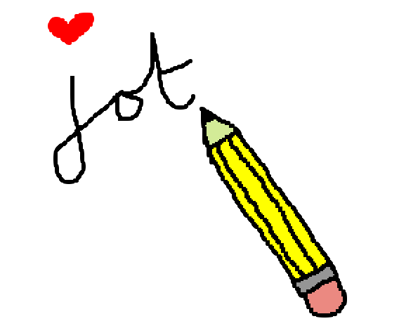
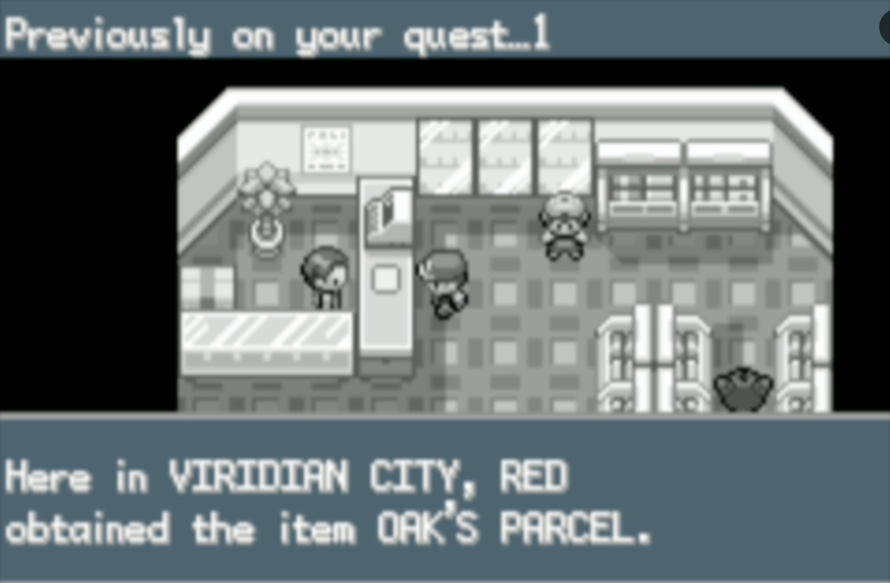

$ jot -l 3
tl;dr
I’ve added a small set of options to jot, my minimal opinionated Python command-line tool that helps me remember stuff.
Forget me jot
You may recall I made a Python CLI tool called jot to help me record work tasks. I go to my terminal and type jot "corrected a typo" and it gets added to a simple text file with a timestamp.
To give it a go, I recommend installing uv and then install from GitHub like uv tool install git+https://github.com/matt-dray/jot.
Opt in
I’ve been using jot for the past couple of weeks and it’s helping me record things I would typically forget about. As a result, I’ve found it easier to unobscure ‘invisible work’ and reflect on what I’ve achieved.
But my list of jottings is getting harder to manage as it gets longer. There’s a couple of things that would make it easier for me: to be able to peek at the past few jottings and to search them for specific terms.
So, I’ve added two options and will demonstrate them against some imaginary data:
breakfast-jot.txt
[2025-08-30 09:27] granola and yoghurt
[2025-08-29 07:47] pancakes, blueberries and maple syrup
[2025-08-28 08:00] fried egg on sourdough toast
[2025-08-27 08:06] yoghurt and strawberries
[2025-08-26 08:19] strawberry jam on toast
[2025-08-25 08:52] wholemeal toast and poached eggs
[2025-08-24 09:15] muesli and milk
[2025-08-23 09:23] muesli with berries and milk
[2025-08-22 08:13] hash browns and scrambled eggs
[2025-08-21 07:48] granola and yoghurt
[2025-08-20 07:54] cereal and milkBelieve me, my actual breakfast is more boring than this. Also sometimes I have a hobbitesque second breakfast.
Everything below is correct as of jot v0.2.3, but I may work to improve some features. Feel free to make suggestions too.
1. List
The first option is simple: print out the last n jottings. You can use the flag --list, or -l for short, and then provide an integer for the number of entries to show.
So let’s print the most recent three entries:
[2025-08-30 09:27] granola and yoghurt
[2025-08-29 07:47] pancakes, blueberries and maple syrup
[2025-08-28 08:00] fried egg on sourdough toastThis is handy for a quick peek at the last few things you’ve been doing.
It reminds me of returning to games like Pokémon FireRed after some time away and being given a quick recap.

2. Search
The second option is also simple. But much more powerful. It lets you search for words and phrases, powered by re’s regular-expression handling.
A simple example would be to look for a single word, this time with the --search or -s flag1:
jot -s egg[2025-08-28 08:00] fried egg on sourdough toast
[2025-08-25 08:52] wholemeal toast and poached eggs
[2025-08-22 08:13] hash browns and scrambled eggsBut we can use a regular expression to be more specific. We can even specify a date range, thanks to the timestamps.
So, when did I have eggs last work-week, specifically? Let’s use a suitable regeggs regex:
$ jot -s "2025-08-2([5-9]).*egg"[2025-08-28 08:00] fried egg on sourdough toast
[2025-08-25 08:52] wholemeal toast and poached eggsWith that regex I’m asking for the string ‘egg’ used in jottings between 25 and 29 August 2025’2.
Pain in the argparse?
A new learning for me has been argparse package, which allows your Python function to accept inputs at the command line.
That’s been crucial for this update to jot (v0.2.3). At the start of the main() function I’ve set up some argparse steps.
To initiate the parser:
import argparse
parser = argparse.ArgumentParser(
prog="jot",
description="Minimal opinionated Python CLI to jot timestamped thoughts.",
epilog="Source: https://github.com/matt-dray/jot",
)Then we can add arguments to the parser. Here’s how we do that for the search argument, for which I’ve written a corresponding search_jottings() Python function:
parser.add_argument(
"-s",
"--search",
nargs="?",
type=str,
help="search jottings (regex supported)",
)After these declarations, we can collect the parsed arguments:
args = parser.parse_args()Later in the body of the main() function we can use the named elements of args to pass into our Python functions. For our search option, that looks like this:
search_jottings(jot_path, args.search)As a result of this set up, we also get a nice help file for free with --help or -h, which should be helpful for users:
jot -husage: jot [-h] [-l [LIST]] [-s [SEARCH]] [text]
Minimal opinionated Python CLI to jot timestamped thoughts.
positional arguments:
text text to write to file
options:
-h, --help show this help message and exit
-l [LIST], --list [LIST]
show last n jottings
-s [SEARCH], --search [SEARCH]
search jottings (regex supported)
Source: https://github.com/matt-dray/jotJot on
As I’ve mentioned before, jot was built by me for me. It’s basically feature-complete from my perspective. The plan is to extend it minimally and only as a way to learn more Python. But I welcome suggestions!
Environment
Session info
[project]
name = "2025-08-30-jot-options"
version = "0.1.0"
requires-python = ">=3.12"
dependencies = []Footnotes
In future I want an argument to limit the number of jottings returned, otherwise we might flood the console. With eggs. Which could get messy.↩︎
More literally, it matches the string ‘2025-08-2’, replacing the final digit of the date with 5, 6, 7, 8 or 9; then allows for any number of any characters until it finds the string ‘egg’.↩︎
Reuse
CC BY-NC-SA 4.0